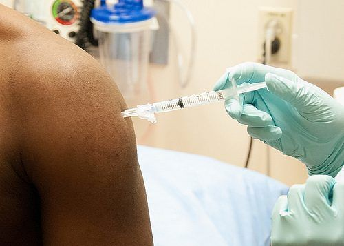
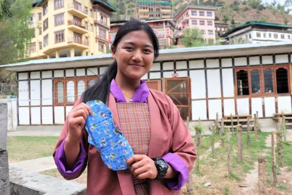
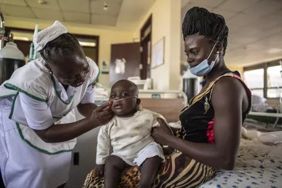

importance of personal hygiene
The following is the importance of personal hygiene
disease prevention: reegular hand washing ,proper body cleaning and clean surfaces significantly reduce the spread of bacteria and viruses that cause illnees
social acceptance: good hygiene is considered a sign of respect and contributes to positive social interactions.
occupational Health: in certain professions like healthcare ,good hygiene is crucial to patient safety
mental well-being: feeling clean and well -mantained can positively impact mental health
environmental health: propers disposal of waste and good hygiene practices contribute to a clean environment
wound care: maintaining cleanliness around wounds helps prevent infections
protecting others: practicing good hygiene helps prevent transmitting diseases to thers, especially vulnerable individuals
Effects of poor personal hygiene and diseases prevention
The Effects of poor personal hygiene and diseases prevention
increase risk of infections:poor hygienr practices, such as not washing hands regularly, can lead to the spread of bacteria and viruses, increasing the risk of infections like respiratoy infections and skin conditions.
skin problem: not maintaining proper cleanliness can resultinthe buildup of dirt,sweat and oils leading to condition like acne ,dermatitis and fungal infections
spread of communicable diseaes:without regular hygiene are more likely to spread to others.
Dental Issues:Poor oral hygiene can lead to tooth decay, gum disease, and bad breath. These issues can also increase the risk of developing more serious conditions like heart disease.
Body Odor:A lack of regular bathing or showering can cause a buildup of sweat and bacteria on the skin, leading to unpleasant body odor.
Weakened Immune System: When hygiene is neglected, the body can be exposed to harmful bacteria and pathogens, which the immune system, making it harder to fight off illnesses.
Increased Risk of Chronic Conditions: Over time, poor hygiene can contribute to chronic health issues like respiratory diseases (due to unclean living environments) or gastrointestinal disorders from poor food handling.
Importance of diseases prevention
The following is the importance of diseases prevention
Reduce the risk of illness and death
Improve overall health and well-being
Lower healthcare costs
Enhance economic stability
some example disease prevention using vaccination

UNICEF supports government emergency responses and development programmes to improve hygiene by:
- Supporting girls and women with menstrual hygiene management: We work to strengthen confidence, knowledge and skills among girls and women to manage their menstruation safelly.
- Supplying hygiene products and services: By providing hygiene kits during emergencies and supporting schools to build handwashing facilities, we help to ensure that everyone has the right hygiene products and services within reach.
- Promoting hygiene behaviours:We mobilize communities through handwashing campaigns, integrating hygiene into school curricula and promoting sanitation.
- Strengthening the hygiene sector: We work with governments to strengthen policies, institutional arrangements, planning, financing, monitoring and capacity development — the fundamental building blocks for sustainable hygiene improvement.
MORE FROM UNICEF
Supporting girls and women with menstrual hygiene management: We work to strengthen confidence, knowledge and skills among girls and women to manage their menstruation safely, know what to ask for when they get their period, and use clean materials and facilities.
- 
Strengthening the hygiene sector:
- 